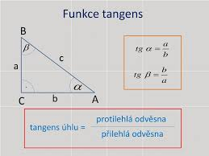
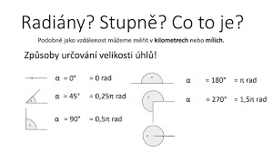

FUNKCE TANGENS
Funkce tangens je definována v pravoúhlém trojúhelníku jako poměr protilehlé a přilehlé odvěsny.
Jejím grafem je tangentoida.
Funkce je definována v intervalu od 90 ° ± k · 180 ° do 270 ° ± k · 180 ° a nabývá hodnot od −∞ do +∞.
Pro označení této funkce se obvykle používá značka tan (v českých publikacích běžně též tg) doplněná značkou nezávisle proměnné (zpravidla úhlu).
V pravoúhlém trojúhelníku (pro ostrý úhel) je tangens úhlu definován jako poměr délek protilehlé a přilehlé odvěsny.
 
Zpět na hlavní stranu